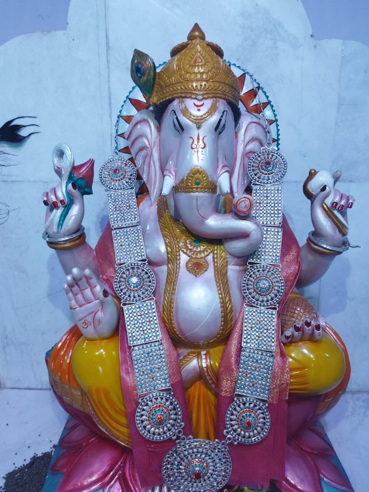
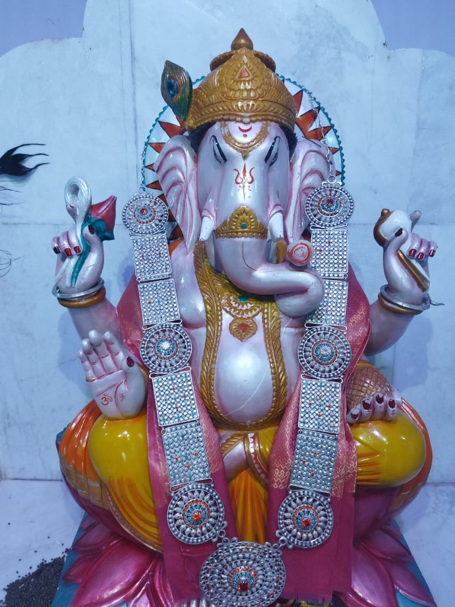

दिवस पहिला
दिवस दूसरा
दिवस तिसरा
दिवस चौथा
दिवस पाचवा
दिवस सहावा
दिवस सातवा
समाप्ती
माहिती संपादक
- श्री पवन निकम
- श्री सौरव पंडित

माहिती संपादक
आमची आधुनिक माध्यमे
देवपुळ बद्दल
2011 च्या जनगणनेनुसार देवपूळ गावाचा स्थान कोड किंवा गाव कोड 548323 आहे. देवपूळ गाव हे भारताच्या महाराष्ट्र राज्यातील औरंगाबाद जिल्ह्यातील कन्नड तालुक्यात आहे. हे उपजिल्हा मुख्यालय कन्नड (तहसीलदार कार्यालय) पासून 20 किमी अंतरावर आणि जिल्हा मुख्यालय औरंगाबादपासून 75 किमी अंतरावर आहे. 2009 च्या आकडेवारीनुसार, देवपूळ गाव देखील ग्रामपंचायत आहे.
देवपूळची लोकसंख्या
| तपशील | एकूण | पुरुष | स्त्री |
|---|---|---|---|
| एकूण लोकसंख्या | अंदाजे 1,168 पेक्षा जास्त | 597 | 571 |
| साक्षर लोकसंख्या | 736 | 424 | 312 |
| निरक्षर लोकसंख्या | 432 | 173 | 259 |
देवपुळ - गावाचा आढावा
| ग्रामपंचायत : | देवपुळ |
|---|---|
| ब्लॉक / तहसील : | कन्नड |
| जिल्हा : | औरंगाबाद |
| राज्य : | महाराष्ट्र |
| पिनकोड : | 431104, पिशोर |
| क्षेत्र : | 341.25 हेक्टर |
| लोकसंख्या | अंदाजे १,१६८ पेक्षा जास्त |
| कुटुंबे : | 214 |
| जवळचे शहर : | कन्नड (२० किमी) |
देवपुळ गावाचा नकाशा
 
